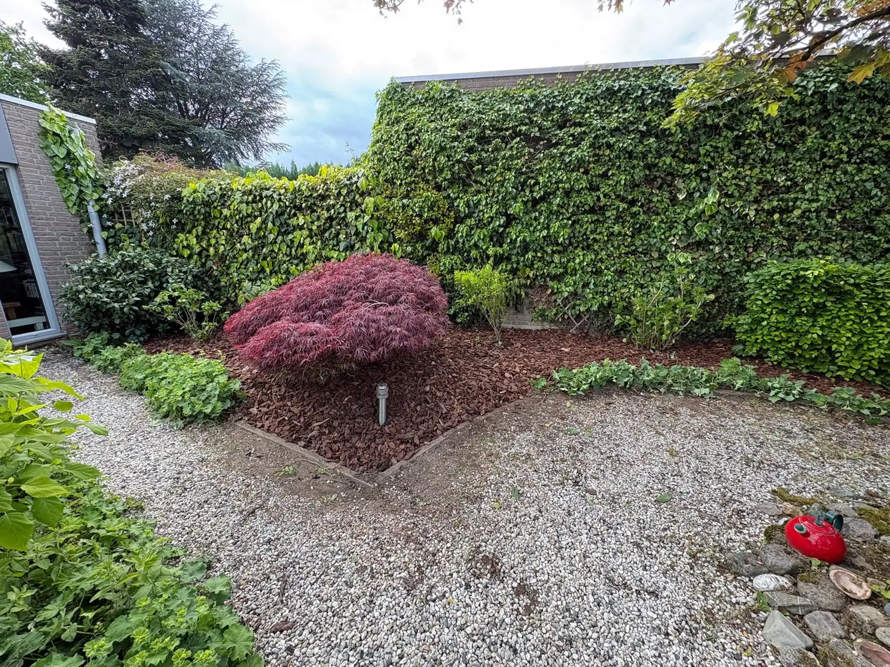
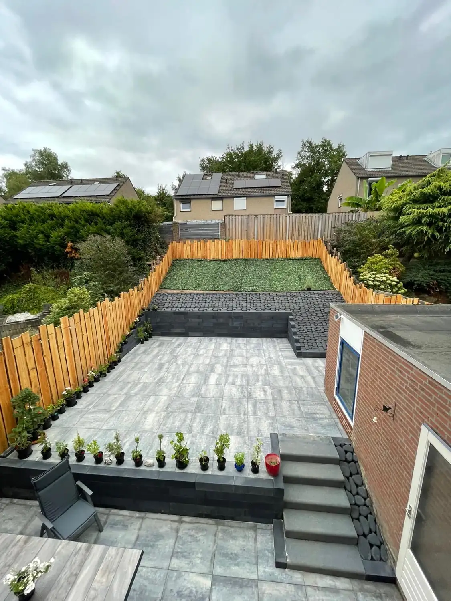
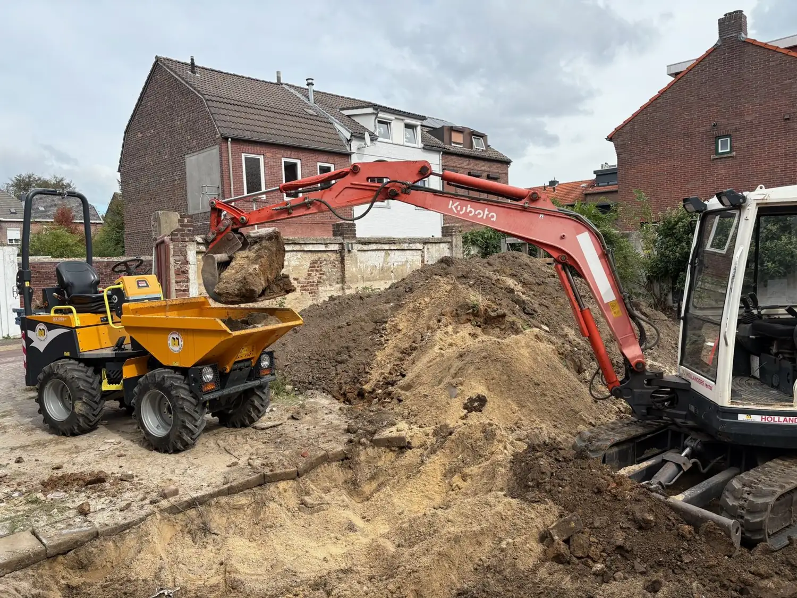
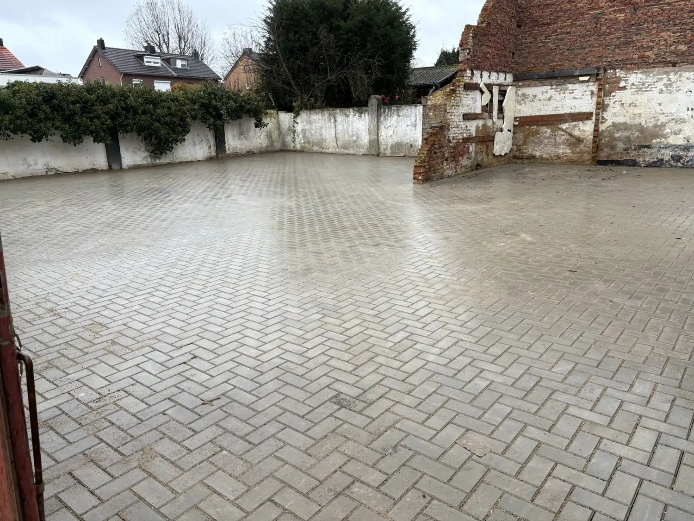
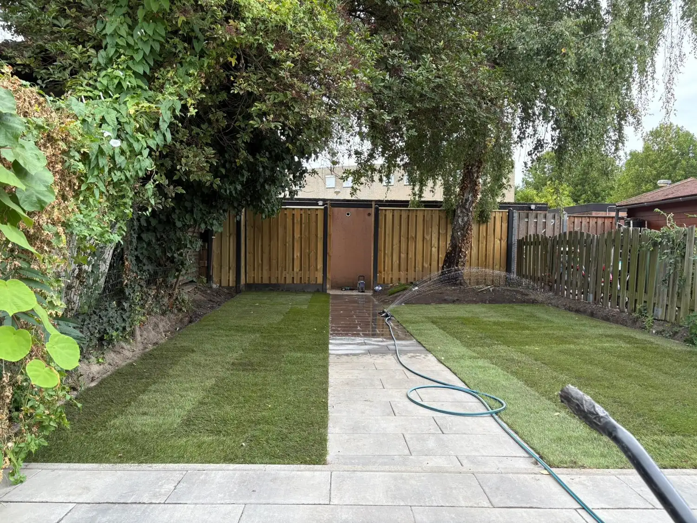
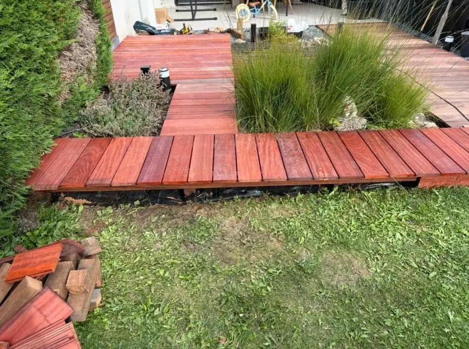
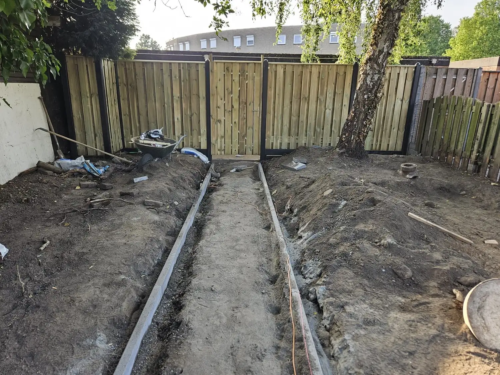

Kies jouw dienst
Klik op een dienst voor meer informatie, werkwijze en voordelen.

Tuinontwerp
Van ontwerp en beplantingsplan tot volledige aanleg, wij brengen kleur, sfeer en leven in jouw tuin.
Meer info →
Terrassen
Strakke tegels of natuursteen, wij leggen het vakkundig aan voor de perfecte buitenleefruimte.
Meer info →
Grondverzet
Professionele basis voor jouw tuin, afgraven, ophogen, drainage en terreinvoorbereiding.
Meer info →
Tuinonderhoud
Jouw tuin het hele jaar in topconditie, van snoeien en maaien tot borders bijhouden.
Meer info →
Opritten
Een strakke oprit voor lichte of zware voertuigen, duurzaam gefundeerd en netjes afgewerkt.
Meer info →
Gazon
Van kale grond of oud gazon naar volledige bodemverbetering, kies tussen inzaaien of grasmatten.
Meer info →
Vlonders
Sfeervolle vlonders in hout of onderhoudsarm composiet, duurzaam en jarenlang mooi.
Meer info →
Schuttingen
Stijlvolle privacy-afscheiding die de tuin compleet maakt, op maat geplaatst.
Meer info →